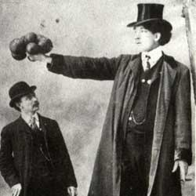

|
| Home | Talent | Cosmetic | Deformity | Abnormal | Ethnological |
The Giant
To conterpart the Dwarf, the Giant man was frequently a spectical in Victorian Freak Shows. People would awe at those of extrodinary heights. Giganticism was not only a genre in and of itself, but often would spread out to those of differnet racial backgrounds. There were many famous Freak Show giants including George Auger, Chang, the Chineese Giant, and The African Queen. Most "giants" in shows would stand next to the dwarf to juxtapose one another - an obvious, but effective technique.
|